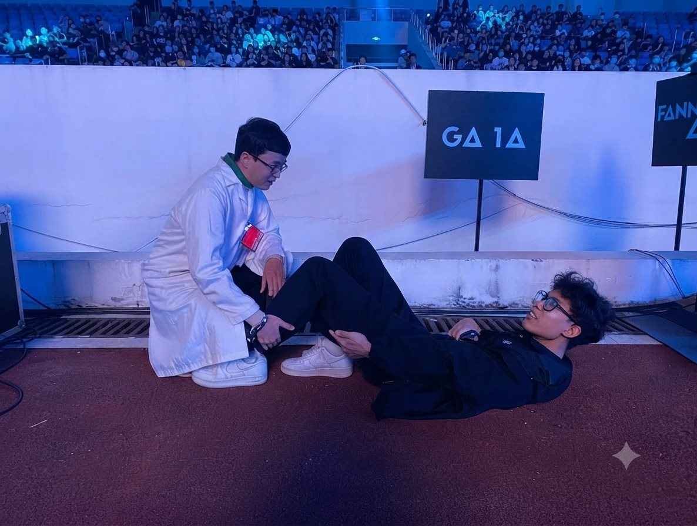

Chuột rút liên quan đến vận động (Exercise-Associated Muscle Cramps – EAMC) là một trong những vấn đề thường gặp nhất ở các môn thể thao sức bền. Với người chạy bộ, đặc biệt là marathon và ultramarathon, chuột rút không chỉ gây khó chịu mà còn là nguyên nhân khiến nhiều vận động viên phải giảm tốc độ hoặc thậm chí bỏ cuộc giữa chừng.
Các nghiên cứu cho thấy tỷ lệ xuất hiện chuột rút có thể lên tới 18% trong các giải marathon đường trường và hơn 40% trong các cuộc đua ultramarathon cự ly dài. Mặc dù phổ biến như vậy, nguyên nhân thực sự của hiện tượng này vẫn còn là chủ đề được nghiên cứu và tranh luận.

Chuột rút có thực sự do thiếu nước và điện giải?
Trong nhiều năm, quan điểm phổ biến nhất cho rằng chuột rút xảy ra do mất nước hoặc mất điện giải, đặc biệt là natri và kali. Đây cũng là lý do nhiều người chạy bộ có thói quen bổ sung muối điện giải hoặc ăn chuối trước và trong khi thi đấu.
Thực tế, niềm tin này vẫn rất phổ biến trong cộng đồng chạy bộ. Một khảo sát trên các vận động viên sức bền cho thấy khoảng 75% tin rằng bổ sung natri có thể giúp ngăn ngừa chuột rút.2
Tuy nhiên, các nghiên cứu gần đây đang đặt ra nhiều câu hỏi đối với giả thuyết này.
Nghiên cứu mới nói gì?
Năm 2020, Martínez-Navarro và cộng sự thực hiện một nghiên cứu trên 98 vận động viên marathon nhằm so sánh những người xuất hiện chuột rút với những người không bị chuột rút trong và ngay sau cuộc đua.1
Các nhà nghiên cứu đánh giá nhiều yếu tố liên quan đến tình trạng mất nước và điện giải, bao gồm:
- Thay đổi trọng lượng cơ thể sau cuộc đua
- Độ cô đặc nước tiểu
- Nồng độ natri máu
- Nồng độ kali máu
Kết quả cho thấy không có sự khác biệt đáng kể giữa nhóm bị chuột rút và nhóm không bị chuột rút ở các chỉ số trên.
Nói cách khác, những người bị chuột rút không mất nước nhiều hơn và cũng không có tình trạng thiếu điện giải rõ rệt hơn so với những người hoàn thành cuộc đua mà không gặp vấn đề gì.
Điều gì khác biệt ở nhóm bị chuột rút?
Điểm đáng chú ý nhất của nghiên cứu là nhóm xuất hiện chuột rút có nồng độ các dấu ấn tổn thương cơ cao hơn đáng kể sau cuộc đua.
Các chỉ số như Creatine Kinase (CK) và Lactate Dehydrogenase (LDH) đều tăng cao hơn ở nhóm này, cho thấy cơ bắp phải chịu mức độ căng thẳng và tổn thương lớn hơn trong quá trình vận động.
Phát hiện này củng cố giả thuyết ngày càng được nhiều nhà nghiên cứu ủng hộ: chuột rút có liên quan mật thiết đến tình trạng mệt mỏi thần kinh – cơ và quá tải cơ bắp hơn là mất nước đơn thuần.3
Một số tác giả thậm chí cho rằng chuột rút có thể là một cơ chế bảo vệ của cơ thể nhằm hạn chế tổn thương cơ tiến triển khi cơ đã hoạt động vượt quá khả năng thích nghi.
Vai trò của tập sức mạnh
Một phát hiện thú vị khác từ nghiên cứu là sự khác biệt trong thói quen tập luyện giữa hai nhóm.
Khoảng 48% những người không bị chuột rút cho biết họ thường xuyên tập sức mạnh cho chi dưới, trong khi tỷ lệ này ở nhóm bị chuột rút chỉ khoảng 25%.
Mặc dù chưa đủ để khẳng định quan hệ nhân quả, kết quả này cho thấy tập luyện sức mạnh có thể đóng vai trò bảo vệ trước nguy cơ xuất hiện chuột rút trong các hoạt động sức bền kéo dài.
Điều này hoàn toàn phù hợp với hiểu biết hiện nay về cơ chế thần kinh – cơ. Một hệ cơ khỏe hơn, khả năng chịu tải tốt hơn và mức độ mệt mỏi xuất hiện muộn hơn có thể giúp giảm nguy cơ xảy ra các cơn co cơ không kiểm soát.
Người chạy bộ nên làm gì để giảm nguy cơ chuột rút?
Từ góc độ thực hành, người chạy bộ vẫn cần duy trì chiến lược bổ sung nước và điện giải hợp lý nhằm tối ưu hiệu suất thi đấu và phòng ngừa các rối loạn liên quan đến nhiệt.
Tuy nhiên, nếu mục tiêu là giảm nguy cơ chuột rút, việc chỉ tập trung vào đồ uống điện giải hoặc ăn thêm chuối có thể chưa đủ.
Những yếu tố có vẻ quan trọng hơn bao gồm:
- Xây dựng nền tảng sức mạnh cơ chi dưới.
- Tăng tải tập luyện một cách từ từ và có kế hoạch.
- Cải thiện khả năng chịu đựng của hệ thần kinh – cơ.
- Đảm bảo phục hồi đầy đủ giữa các buổi tập.
- Tránh thi đấu vượt quá mức độ chuẩn bị thực tế của cơ thể.
Đối với vận động viên phong trào, một chương trình tập sức mạnh 2–3 buổi mỗi tuần kết hợp với chạy bộ thường mang lại nhiều lợi ích hơn chỉ tập trung vào số kilomet chạy được.
Kết luận
Quan điểm cho rằng chuột rút khi chạy bộ chủ yếu do thiếu nước hoặc thiếu kali đang dần được thay thế bởi những bằng chứng mới. Các nghiên cứu hiện nay cho thấy những người bị chuột rút không nhất thiết mất nước hay mất điện giải nhiều hơn, nhưng lại có dấu hiệu tổn thương và mệt mỏi cơ cao hơn.
Vì vậy, thay vì chỉ quan tâm đến việc ăn thêm chuối trước cuộc đua, người chạy bộ nên dành nhiều sự chú ý hơn cho chương trình tập sức mạnh, quản lý tải tập luyện và khả năng phục hồi. Trong nhiều trường hợp, chính những buổi tập tạ đều đặn mới là yếu tố giúp bạn tránh được cơn chuột rút ở những kilomet cuối cùng của cuộc đua.